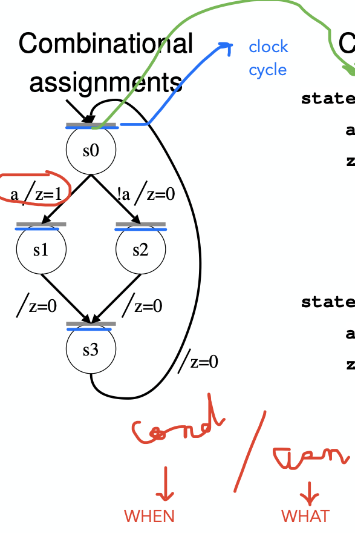
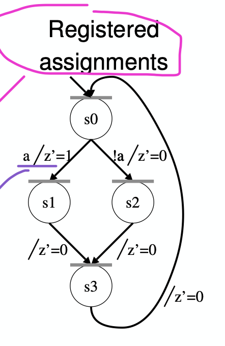

timing based statements in combinational processes
Sequential statements in concurrent region or vice versa
Synthesizable
The code can turn into hardware
Look for:
initial values
wait for X ns
variables, bits and booleans
clocked process starting with an assignment (should be wait instead)
different wait conditions
multiple of same wait is fine
multiple if rising_edge
if rising edge and wait in the same process
if rising_edge with an else
a loop that has both combinational and clocked paths
Bad practice
Your code is shit
Look for:
latches (conditionals without an else)
asynchronous resets
combinational loops (signal dependent on self)
using a data signal as a clock
clock as a data signal
tri-state buffers and using Z
input or buffer type
multiple drivers (assigning signal in multiple processes)
Delta Cycle simulations
There are two fundamental rules for zero-delay simulation:
Events appear to propagate through combinational circuitry instantaneously.
All of the gates appear to operate in parallel
simulation-step: Executing one sequential assignment or process mode change.
simulation cycle: The operations that occur in one iteration of the simulation algorithm. (one cycle of Drive, Resume, Execute, Suspend)
delta cycle: A simulation cycle where time did not advance at the beginning of the cycle.
simulation round: A sequence of simulation cycles that all have the same simulation time. (since a series of delta cycles that all get collapsed together)
Time is before 0. Initialize
all processes set to resume
all signals set to default value X
Time is 0
execute all processes that rely on time change by calculating projected values, then suspend
execute all processes reliant on “other” values, calculating the projected value based on the “other” values’ actual values, then suspend
note that since time has increased, this is not a delta cycle
If all processes are suspended, and there are projected values that differ from the actual value, copy the projected values into the actual
resume, execute, change data, then suspend any process dependent on the changed value
begin next delta cycle for next process once all of the above are suspended
If all the processes are suspended, and there are no changed projected values, increment time
Continue steps 3/4 until no values change, even when we keep incrementing time
Register-Transfer Level Simulation
Pre-process processes
separate into times (wait for X ns), clocked (if rising_edge) and combinational
deconstruct combinational process such that they only mutate one signal per process
sort them based on which ones are dependent on the other signals (no dependency on other signals would be at the top)
For each unit of actual time
run timed process in any order, reading OLD values of signals
run clocked process in any order, reading NEW timing signals and OLD data values
run combinational processes in sorted order, reading NEW values of signals
Mapping Circuits onto FPGA cells
Essentially the idea is just to traverse backward from the output, stuffing as much combinational circuitry as you can into a single LUT, with 4 or less inputs
One Useful Trick: Any output of a flip flop MUST be the output of an FPGA cell.
Another trick: Any input that is directly flopped, must have a direct connection to a flop flop in an FPGA cell
Arithmetic circuits
n bit adder \implies n FPGA cells because you need n output bits
We’re only allowed to use carry in/out for arithmetic circuits
ECE 327 State machines


Encodings
Binary
One Hot
Thermometer
Gray
S0
00
0001
0001
00
S1
01
0010
0011
01
S2
10
0100
0111
11
S3
11
1000
1111
10
Remember to take care of representations of invalid states if your number of states isn’t a power of 2
Types of machines:
explicit-current
one signal for current state
state changed in a clocked process
explicit-current-next
two signals, one for current, one for next
next state set as combinational
current state flopped from next as a clocked process
implicit
no state signals
multiple waits (one for each state) in a process
If a signal is assigned to multiple times in one transition you just take the last assigned value.
You can also split up multiple assignments to multiple ‘transient’ states
Indeterminate number of bubbles means you have an idle loop outside of the state machine doing all the wor
Dataflow diagrams
Basically you need to look at order of operations and figure out what values are dependent on what
Inputs go on row 0. Each row thereafter is one clock cycle
Each logic block can only take two inputs. Outputs of logical blocks can be used the cycle after.
Registered (input/output) means they can only be read one cycle after
Latency: Number of rows to get an output including input row
Components: Number of logic blocks
Registers: Number of signals that cross clock boundaries (horizontal lines)
Throughput = parcels per clock cycle = 1 parcel per X clock cycles
Unconnected signals tails in a cycle = number of inputs
Unconnected signal heads in a cycle = number of outputs
You can put more than one logic block in series in one row, at the cost of increasing overall hardware required, but decreasing latency
ASAP parcel means first and last row has to be combined!
even at the cost of hardware!
moreover, rows are labelled by state and not by clock cycle
include o1 and o2
Memory operations are right above clock edge
Memory is an inter-parcel variable!
Adder is just a negative subtracter or vice versa
Anti dependency arrow from Read and Write in same cycle to output inter-parcel variable
RAW and WAR dependencies have to be kept in check
You can change timings of stuff, but only in such that memory dependency is still correct
Arbitrary components can be added as ling as the overall total remains the same.
if overall only one F has been used, you can add a single F to every cycle as long as it means that other parts are getting optimized.